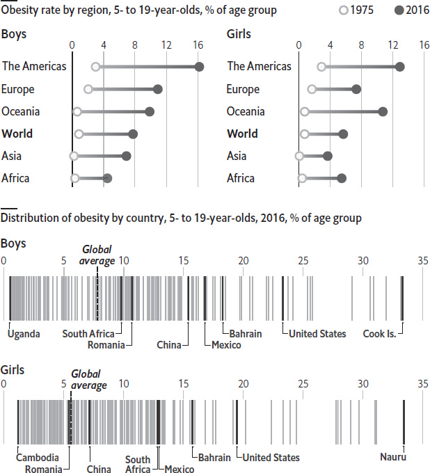
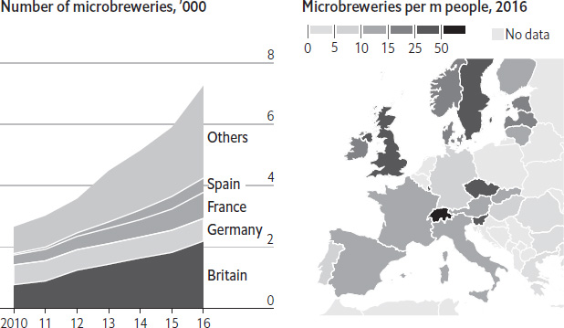
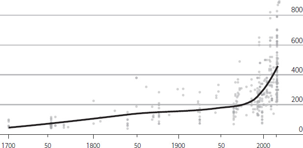
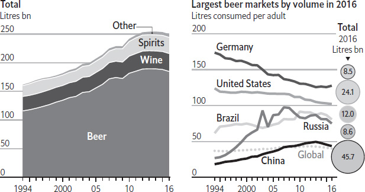
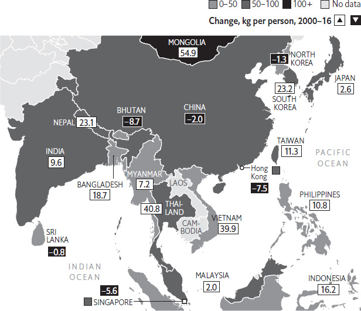

In English the word “avocado” refers to a fleshy fruit, native to Mexico. In Spanish an abogado is a lawyer. That is apt. The avocado has found itself flirting with the law on numerous occasions in recent years. What is the link between avocados and crime?
Since the late 1990s the world’s appetite for avocados has steadily increased. In 2013 global production reached 4.7m metric tonnes – twice the level in 1998. A few factors explain the boom. Clever marketing has drawn consumers to the fruit for its high nutritional content (it is full of the sort of “good” fats lauded by dieticians) and health benefits, such as lowering the risk of heart disease. Moreover, it is also the main component in guacamole, a dip that has benefited from the rising popularity of Mexican fast food, such as tacos. As a result, traditional markets have expanded while new ones have emerged: China’s avocado imports quadrupled in the five years from 2008.
But sometimes there are not enough avocados to go round. In 2016 bad weather in New Zealand and Australia brought harvesting to a halt. Bush fires destroyed orchards while heavy rainfall delayed picking of the fruit. Prices in New Zealand hit NZ$4.61 ($3.25) per avocado in June that year, the highest since records began in 1966. This prompted some people to take the law into their own hands, pilfering large quantities of the fruit from avocado orchards and selling them on the black market. High prices in 2017 led to another spate of night-time raids on orchards. And in May 2018 average prices hit a new high of NZ$5.06, prompting some restaurants to remove avocados from their menus. In Mexico, meanwhile, which accounts for around one-third of global avocado production, the crime is of an altogether different sort. The country is by far the biggest exporter of the fruit – and plans to stay that way. Growers there (or at least the cartels that control them) have taken to cutting down forests illegally to make way for more extensive farming. In Costa Rica, a ban on imports of Hass, a kind of avocado, led to smuggling of the fruit across the border from Panama.
Boosting production quickly is hard, because the avocado is a difficult plant to grow. As with harvests occurring at different times in different countries, there can be sudden swings in availability and price. (Poor harvests in Mexico, California and Peru caused prices to spike in 2017.) As long as demand exceeds supply and avocados remain a lucrative product, dodgy dealing is likely to continue. Tweets declaring the avocado to be “#overcado” seem to have done little to dampen enthusiasm for the fruit. Those new to its appeal are unlikely to relinquish the green stuff anytime soon.
Every year during the summer solstice, a dog-eating festival takes place in Yulin, a city in the southern Chinese province of Guangxi. It always sparks controversy, as photographs of dogs being fried or treated cruelly go viral. In 2017, animal-rights activists and American congressmen demanded that China ban the eating of dogs and cats, as Taiwan did earlier that year. Yulin’s local government took modest steps to restrain or hide some of the more contentious activities, such as selling dogs in food markets. Still, the festival was packed. Why has the controversial culinary habit become so popular in China?
Contrary to cliché, dog meat has not always been a common item in the Chinese diet. Unlike in the West, eating dogs has never been taboo, but it appears to have been rare in the past. Government accounts single out butchers who sold dog meat, suggesting it was unusual and worthy of record. According to Guo Peng of Shandong University, one of the few people to have studied the dog-meat market, only China’s ethnic Korean minority eat dog with regularity. The majority Han population, she argues, see it as a medicinal food, which is believed to warm the body in winter or cool it in summer – hence the timing of the Yulin festival at the mid-year solstice, literally the dog days of summer. Traditionally, Ms Guo says, most people have only eaten dog once a year, if at all. According to a survey conducted in 2016 by Dataway Horizon, a polling firm, and Capital Animal Welfare Association, a Chinese NGO, almost 70% of Chinese people say they have never eaten dog. Of those who have, most claim they did so by accident – when invited to a social or business dinner, for example.
So why is the Yulin festival packed? And why do restaurants in many cities proudly put dog on the menu? The one-word answer is: criminality. Dog meat, a bit like drugs, has become a lucrative source of criminal income. For the past decade Ms Guo has been going from village to village in Shandong province, on the east coast, asking inhabitants what has been happening to their animals. In one, villagers told her that a third of their dogs had been stolen between 2007 and 2011. Hunters, she discovered, have been roaming the countryside in vans, killing dogs with poisoned darts and selling them on to middlemen. Hunters got about 10 yuan ($1.30) for a kilogram of meat, so a medium-sized dog might be worth 70–80 yuan. One young man she interviewed was hunting so he could earn enough to get married. Hunted dog meat has increased the supply and reduced prices, boosting the size of the overall market. Ms Guo thinks Shandong and neighbouring Henan now supply a significant portion of China’s dog-meat business.
In a way, the dog-meat trade exploits the fact that modernisation in these provinces is incomplete. In villages, dogs are still guardians. In big cities, they are increasingly becoming pets. The number of dogs registered as pets in Beijing, for example, has been growing by 25% a year for a decade. It now stands at about 2m, more than in New York. Concern for animal welfare has been growing in parallel, indicated by an increase in animal hospitals, animal-rescue and adoption agencies, and changing attitudes. Animal-welfare concerns are coming more into conflict with dog hunters and dog-meat eaters. Eventually they will probably snuff out the trade.
When people think of nutritional woes in the developing world, they probably think of famine. But the number of young people in low- and middle-income countries who are obese is catching up with the number who are underweight. In 1975 obese children were almost unknown outside the rich world: just 0.3% of people in developing countries aged five to 19 had a body-mass index (BMI) more than two standard deviations above the average for their age and gender, the World Health Organisation’s definition of obesity. That figure has soared to 7% today. Meanwhile, the proportion of children who are underweight (with a BMI two standard deviations below average for their age and gender) in low- and middle-income countries has declined, from 13% to 10%. According to the WHO, if current trends continue, the number of obese children worldwide will surpass that of the undernourished by 2022.
It might seem paradoxical that countries can have high levels both of hunger and of obesity. But the two are linked. Poor parents tend to seek the most affordable meals they can find to fill up their children. Thanks to the spread of convenience foods and energy-dense processed carbohydrates, the cheapest foods often deliver precious few nutrients relative to the calories they contain, putting children who eat a lot of them on a fast track to obesity.
As a result, countries where the number of underweight children falls sharply often overshoot in the other direction. South Africa, for example, slashed the share of its youngsters who are underweight from about 20% in 1975 to less than 5% today. Over the same period, its childhood obesity rate went from roughly zero to more than 10%. Similarly, in China, the proportion of underweight youngsters fell from 6% to 3%, but its obesity rate likewise grew from almost nothing to over 10%. In 1975 fewer than half a million young Chinese were obese; now nearly 28m are.
Childhood obesity raises the risk of all sorts of maladies later in life – particularly diabetes, which now causes more deaths than AIDS, tuberculosis and malaria combined. Governments in countries where underweight children are still common would be well-advised to help families obtain food that will not simply replace one nutritional problem with another.

Sources: Risk Factor Collaboration; UN Population Division; WHO; The Economist
In May 2018 America received its first shipment of Argentine lemons in 17 years, following the lifting of an import ban imposed by the Department of Agriculture in 2001. The resulting export squeeze had seen relations sour between the countries, as Donald Trump observed: “One of the reasons he’s here is about lemons. And I’ll tell him about North Korea, and he’ll tell me about lemons,” he said when Mauricio Macri, the Argentine leader, visited him in April 2017. A resolution to the citrus wars was keenly awaited. America, which is the world’s largest consumer of the fruit, can now source lemons from the fourth-largest producer. What prompted the original dispute, and why did peace break out at last?
The dispute had deep roots. For most of the 20th century, imports of Argentine lemons were restricted under quarantine rules, for fear that the fruit might bring in pests that could hurt American crops. When a relaxation was proposed in 2000, a consortium of growers in California and Arizona – which account for all of America’s domestic production – sued the agency responsible for protecting America’s plants and animals. Citrus fruits, they argued, had become a bargaining chip in America’s desire to open Argentina to its exports; in their view the risk of contamination remained. The courts sided with the farmers, and the ban was reinstated in 2001. In the years that followed, lukewarm relations between the two countries did not help. Nor did export taxes imposed on producers by an Argentine government trying to shore up its disastrous finances. The quarrel went to the WTO in 2012, as part of a bilateral tit-for-tat dispute involving meat and other foodstuffs.
Mr Macri, elected president in 2015 on a pro-market mandate, eliminated most taxes on agricultural exports. His arrival also prompted a rapprochement with the United States. After Barack Obama visited the Argentine capital in March 2016, American officials travelled to the country to inspect citrus orchards, prompting the outgoing Obama administration to say in December 2016 that it would lift the ban. Mr Trump’s inauguration a few weeks later – and his threats to withdraw from the North American Free Trade Agreement – led Argentina to worry that the measure would be indefinitely delayed, after an initial 60-day stay on the decision was renewed by the new administration in March 2017. Mr Macri’s visit cleared the way for imports to resume in May 2017, but American growers once again mounted a legal challenge against the decision, arguing that it had been made for political rather than scientific reasons.
Mr Trump’s conspiracy-minded critics suggested, for example, that allowing imports was payback for California’s strong support for Hillary Clinton in the 2016 elections. That was probably reading too much into it. In March 2018 a judge rejected the citrus-growers’ argument, allowing imports to resume the following month. The president’s most substantial justification for supporting an end to the ban was that “the lemon business is big, big business”. His support for imports was hardly sign of a deeply felt belief in trade liberalisation, in short. Even for advocates of free trade, the resolution of this dispute left a bitter aftertaste.
These are not vintage times for Europe’s brewers. Overall beer sales have been fairly flat for years, at around 375m hectolitres per year. Since 2012 consumption per person has fallen slightly in most of the biggest beer-drinking countries. But beneath this seemingly uneventful surface, change is brewing: smaller producers and craft breweries have been gaining market share at the expense of established brands. Between 2010 and 2016 the number of microbrewing businesses in Europe nearly tripled, surpassing the 7,000 mark for the first time.
Small-scale brewing owes its success to several factors. Richer consumers are increasingly turning to more distinctive, local products rather than mass-market brands. Microbreweries are relatively cheap and easy to establish: they can be housed in industrial estates, old factories, farm sheds and even campsites. Many small brewers are keen to open their workplaces to help educate the more discerning drinker. This trend is particularly prevalent in Britain, which is home to 2,200 microbreweries all by itself. Tours range from the two small units occupied by the Padstow Brewery, located in a fashionable Cornish resort, to Meantime, a larger establishment in Greenwich now owned by Japan’s Asahi. Festivals and the stocking by pubs of locally brewed beers have further spread the word.
Wort is going on?

Sources: Brewers of Europe; UN
The shift towards smaller brewers shows no sign of abating. Forecasts for the craft industry look stout, with Technavio, a market-research firm, projecting that revenues will grow by around 10% a year until 2021. To keep pace with demand and stand out from the growing crowd, microbrewers will need to continue devising ever more inventive names, and striking packing designs, for their artisanal ales. Stand still, and the likes of Born Hoppy, Yeastie Boys and the 4 Hopmen of the Apocalypse will no longer be the Cream of the Crop.
When gourmet food trucks first appeared on America’s streets in 2008, many dismissed them as a fad. A decade later it is clear that the trendy trucks – known for offbeat dishes, low prices and clever use of social media – are here to stay. That does not mean they are always welcome. In recent years many cities have passed laws restricting where and when food trucks can operate. But regulating the mobile-food industry has proved difficult. How do cities keep food trucks off their streets?
The food-truck revolution is often credited to Roy Choi, who began selling $2 Korean barbecue tacos on the streets of Los Angeles in 2008. By 2015 America could boast more than 4,000 food trucks, which together were bringing in some $1.2bn per year. Not everyone finds them an appetising prospect, however. Critics say food trucks block streets, take up valuable parking spaces and disrupt pavements with crowds, waste and noise. Restaurant owners complain that because mobile vendors do not have to pay rent or property taxes, they enjoy an unfair advantage. Lawmakers have responded to these complaints with stricter regulation. In 2011 Boston set aside public sites where food trucks could do business – and barred them from operating elsewhere in the city.
In 2013, Washington DC passed a similar law, delimiting “zones” where food trucks could operate legally. In cities that do allow food trucks to ply the public streets, truck owners typically face limits on how long they are allowed to park in a single place. In Denver vendors are given four hours per spot. In other cities, limits can be as short as 30 minutes. Some cities have gone further, imposing minimum distances between food trucks and existing bricks-and-mortar businesses. In Baltimore trucks may not set up shop within 300 feet of a restaurant. In some cities, these “buffer zones” can have a radius as large as 500 feet.
Such regulation has stifled the food-truck industry in some of America’s biggest cities. In New York, where vendors have to shell out as much as $25,000 to rent a permit on the black market (the city has not increased the number of licences in three decades), and may not park in any of the city’s 85,000 metered parking spaces, launching a new food truck has become nearly impossible. In Chicago, where truck owners cannot operate within 200 feet of bricks-and-mortar restaurants and must carry GPS devices to verify their whereabouts, the food-truck market has stalled. Despite being home to more than 7,300 restaurants and 144 craft breweries, Chicago has just 70 licensed food trucks. But some are fighting the regulations: in 2011 the Institute for Justice, a libertarian law firm, successfully challenged an El Paso law that prohibited food trucks from operating within 1,000 feet of any existing restaurant. In 2015 the group won a similar case against San Antonio, which had a longstanding 300-foot rule. Where there is a wheel (or four), there is a way.
In 1674 George Ravenscroft, an English glass merchant, was granted a patent for the discovery, made at his factory in London, that adding lead oxide to molten glass resulted in a clearer, more durable product. Thus was born lead crystal, and with it the fashion, in England, of drinking wine from glass vessels rather than, say, pewter ones. Wine glasses have evolved since then, of course, and one aspect of this evolution is of particular interest to Theresa Marteau and her colleagues from the Behaviour and Health Research Unit at Cambridge University. Dr Marteau suspected that glasses have got bigger over the years, and that this may have contributed to the increased drinking of wine in Britain – an increase that has been particularly marked in recent decades.
She and her team obtained data on glass volumes going back to about 1700, from sources including the Royal Household (which buys a new set for each monarch) and the Ashmolean, the university museum of Cambridge’s arch-rival, Oxford. Altogether, they recorded the capacity of 411 glasses and, as the chart shows, there has indeed been a near-continuous tendency for that capacity to increase since Ravenscroft’s day (he died in 1683). There was also a notable acceleration of the process starting in about 1990. In all, the average capacity of a wine glass increased from 66ml in the 1700s to almost 450ml in 2017.
That this volumetric inflation has stimulated wine consumption – Dr Marteau’s second hypothesis – is hard to prove. But it may have done. The amount of wine drunk in Britain has risen more than sevenfold since 1960, while the population has grown by only 25%. Data collected between 1978 and 2005 by Britain’s Office of National Statistics (ONS) suggest the proportion of adults drinking wine fell from 60% to 50% over that period, while the average weekly consumption of wine drinkers tripled, when measured as units of alcohol. Another data set, collected by the Institute of Alcohol Studies, a temperance charity, suggests that the amount of alcohol from all sources (measured as pure ethanol) consumed per head in Britain is about the same as it was in 1980, though it has fluctuated quite a bit in the intervening years, peaking in 2004.
Capacity of wine glasses in England, ml; 1700–2016

Source: BMJ
Meanwhile, work designed to test directly the idea that glass size matters, which Dr Marteau published in 2016, produced mixed results. She looked at the consequences for wine sales at a bar in Cambridge of serving its wares in both bigger and smaller glasses than normal, while keeping the serving sizes on offer (125ml or 175ml, according to customer choice) the same. In weeks when the bigger glasses were used, wine sales went up by 9% on average. The larger vessels, it seemed, were indeed encouraging customers to order refills more often. On the other hand, in weeks when the size of the glasses was below normal, sales did not go down. Reducing glass sizes, then, does not keep people sober.
Supermarkets encourage shoppers to buy products using clever layouts and cunning promotions. Alluring packaging helps too, while also keeping food clean and safe to eat. Green types balk at plastic-encased bananas. But some forms of packaging, especially for meat, can be an environmental boon. A third of food is wasted between field and plate, according to the UN, costing billions of dollars every year. Global greenhouse-gas emissions associated with food waste are higher than those of India, because chucking out items means the water, fuel, fertiliser and other inputs that went into them are wasted too. Such harm to the planet can be reduced if the length of time that food lingers on shelves or in fridges can be extended. This is especially true for meat.
Meat provides 17% of mankind’s global calorific intake, but it is costly in terms of both cash and resources, requiring a disproportionate amount of water and feed. More land is given over to grazing animals than for any other single purpose. Overall, the livestock sector accounts for as much pollution as is spewed out by all the world’s vehicles. Ruminant livestock, such as cattle and sheep, have stomachs containing bacteria able to digest tough, cellulose-rich plants. But along the way, huge volumes of methane are belched too – a greenhouse gas more than 20 times as powerful as carbon dioxide over the span of a century.
Wrapping meat in vacuum packaging prevents oxidation, extending its lifespan. It allows meat to stay on shelves for between five and eight days, rather than two to four when simply wrapped on a polystyrene tray or draped behind a counter. This pleases big grocery chains, which stand to save thousands of dollars a week if less meat has to be either marked down or thrown out. It also delights consumers, as vacuum-packed meat is more tender.
But doesn’t packaging itself require resources to produce? Yes, but the emissions from creating it are less than those associated with food waste. According to estimates, for every tonne of packaging, the equivalent of between one and two tonnes of carbon dioxide is released. For every tonne of food wasted, the equivalent of more than three tonnes of carbon dioxide is emitted. So although supermarkets have been focusing on curbing the amount of packaging they use, many now consider extending shelf life the most important environmental consideration. Given that meat consumption is expected to grow by 75% by the middle of the century, vacuum packaging offers an important way to boost resource efficiency and access to an important protein source.
The world appears to have passed peak booze. The volume of alcoholic drinks consumed globally fell by 1.4% in 2016, to 250bn litres, according to IWSR, a research firm. It was the second consecutive year of decline, and only the third since data started to be collected in 1994. The main cause of the drop-off is that people are drinking less beer, which accounts for three-quarters of all alcohol drunk by volume. Worldwide beer consumption shrank by 1.8% to 185bn litres in 2016. Yet because the drinking-age population of the world grew by 1% in that time, beer consumption per drinking-age adult declined even more, by 3.2%. The overall drop is almost entirely because of declines in three of the five biggest markets. China, Brazil and Russia accounted for 99.6% of the global reduction in the volume of beer drunk in 2016.
Both economics and changing tastes play a part. China overtook America to become the world’s biggest market for beer (by volume, not value) in 2001. It now quaffs a quarter of all beer. But consumption per person peaked in 2013 and dropped further in 2016. Beer’s appeal is waning among older drinkers, with over-30s moving to wine and over-40s favouring baijiu, the national spirit. Elsewhere, recessions have hit beer-drinkers’ pockets. In both Brazil and Russia, consumption by the average adult fell by 7%.
Drying up
Global alcohol consumption

Source: IWSR
Beer-drinking patterns also change as countries grow richer. In a study published in 2016, Liesbeth Colen and Johan Swinnen of the University of Leuven examined the effects of income growth and globalisation on beer consumption in 80 countries between 1961 and 2009. They found that as GDP per person increased in poorer countries, beer became more popular. But when it reached around $27,000 per person, consumption began to fall: consumers may opt for more expensive drinks, such as wine, once they can afford them. And beer consumption rose as countries became more globalised, the authors found. As international drinks companies move in, punters may find a new favourite tipple. For all these reasons, consumers in emerging markets have driven beer sales ever upwards for decades. But now the IWSR’s figures suggest that the froth is coming off the booze market.
The domestication of wheat and other staple crops in the Middle East some 10,000 years ago allowed for persistent settlement above a level of mere subsistence – and thus kicked off the rise of civilisation. Early farmers grew naturally occurring hybrids of wheat, and over time tamed them into a robust, easy-to-harvest and high-yielding species, the history of which is revealed in the genome of modern bread wheat. It is an enormously dense, complicated genome. And unlike the genetic codes of staples like rice, soya and maize, scientists struggled until 2017 to crack it. Why was it so hard to decipher – and was it worth the effort?
The genomes of ancient wheats, such as wild emmer, contain more DNA base pairs than human genomes do. Domesticated hybrids, like bread wheat, are even larger. The genome of bread wheat has nearly six times as many DNA base pairs as the human genome (about 17bn compared with humans’ 3bn). That is in part because humans are diploid, with two sets of chromosomes, whereas the chromosomes of bread wheat come in sets of six (corresponding to the three ancient wheats of which bread wheat is a hybrid). Furthermore, the DNA of ancient wheat contained a huge amount of duplication. This means that bread wheat not only contains an enormous amount of genetic information, but that much of it is repeated. That makes decoding its genome complex. With fewer unique pieces, it is harder to fit the jigsaw together.
Other staple food crops had their genomes sequenced long before bread wheat. But they are much simpler: popular strains of maize, soya and rice have 2.3bn, 1.1bn and 420m DNA base pairs respectively. The breakthrough with bread wheat came in 2016, when several different academic and industry projects matured. Both the International Wheat Genome Sequencing Consortium (IWGSC), which includes wheat farmers, breeders and scientists, and an independent group led by Johns Hopkins University, managed to sequence it. Others decoded wild emmer, an ancestor of both bread and durum wheat, and Aegilops tauschii, another of bread wheat’s ancestors.
Decoding wheat’s genome is useful for two reasons. First, it makes it easier for researchers to manipulate wheat without recourse to so much trial and error. Second, it allows them to insert attractive traits from ancient wheats into modern ones, rather than introducing genes from other organisms altogether (a process known as transgenics). These ancient wheats may have better resistance to pests or better tolerance of drought, but offer poorer yields and quality, says Catherine Feuillet, head of trait research at Bayer, a German pharmaceuticals firm and an important player in IWGSC’s gene project. Crossing an ancient wheat with a modern one would normally take a decade, but by using the genome as a sort of index of the wheat’s positive traits, iteration and improvement can be done much faster. And with the genome to hand, and in the public domain (the IWGSC is eschewing patents), more researchers can get involved. Help may even come from unexpected corners. Ms Feuillet talks of finding “a high-school student who may finally be able to find a key resistance gene for a fungal disease”.
So central is rice to life in Asia that in many countries, rather than asking “how are you?” people ask, “have you eaten rice yet?” Around 90% of the world’s rice is consumed in Asia – 60% of it in China, India and Indonesia alone. In every large country except Pakistan, Asians eat more rice than the global average. Between the early 1960s and the early 1990s, rice consumption per head rose steadily, from an average of 85kg per year to 103kg. As Asia grew wealthier, people began to consume more food, and rice was available and affordable.
But rice consumption is now more-or-less flat in Asia as a whole. And in Asia’s better-off countries rice is going out of fashion. Figures from the United States Department of Agriculture (USDA) suggest that rice consumption per head has fallen since 2000 in China, Indonesia and South Korea, and has crashed in Singapore. Asians are following a rule known as Bennett’s law, which states that as people become wealthier they get more of their calories from vegetables, fruit, meat, fish and dairy products. At the same time, many of them are starting to replace the rice in their diets with wheat.
Wheat consumption
Kg per person, 2016–17 forecast

Sources: USDA; UN; national statistics
Wheat consumption is rising quickly in countries like Thailand and Vietnam. South-East Asian countries consumed 23.4m tonnes of wheat in 2016–17, estimates the USDA – up from 16.5m tonnes in 2012–13. Almost all of it was imported. In South Asia consumption is estimated to have grown from 121m to 139m tonnes over the same period.
This trend has a long way to run, predicts Rabobank, a bank. South-East Asians still eat only 26kg of wheat a year, much less than the world average of 78kg. They seem unperturbed by price rises: wheat-eating kept growing even as the grain became more expensive between 2009 and 2013. Still, rice will remain central to many Asian cultures. People are unlikely to start greeting each other by asking if they have eaten bagels just yet.